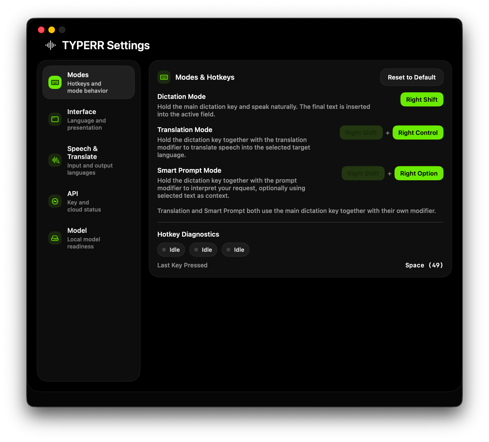
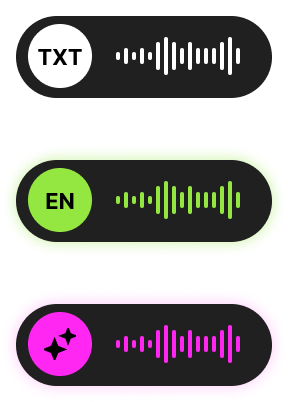
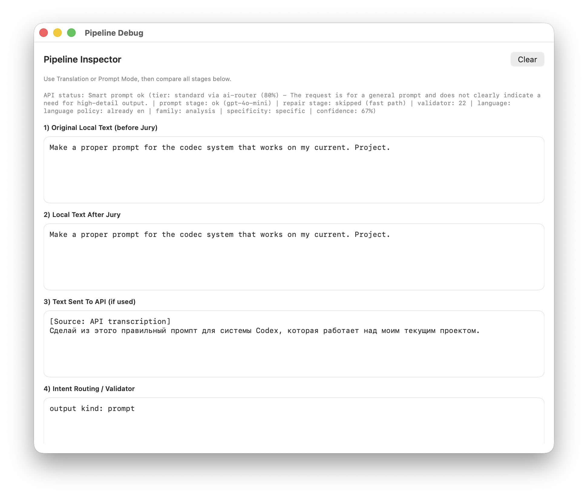
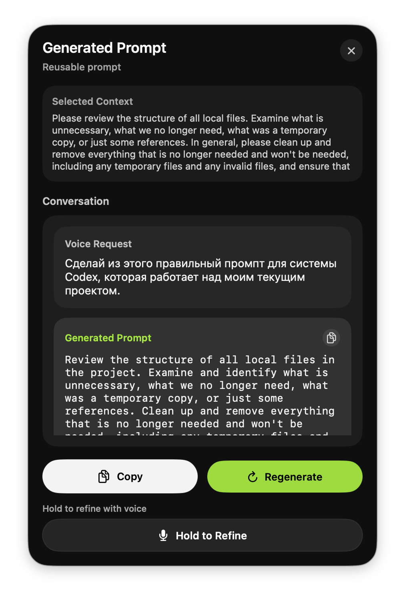
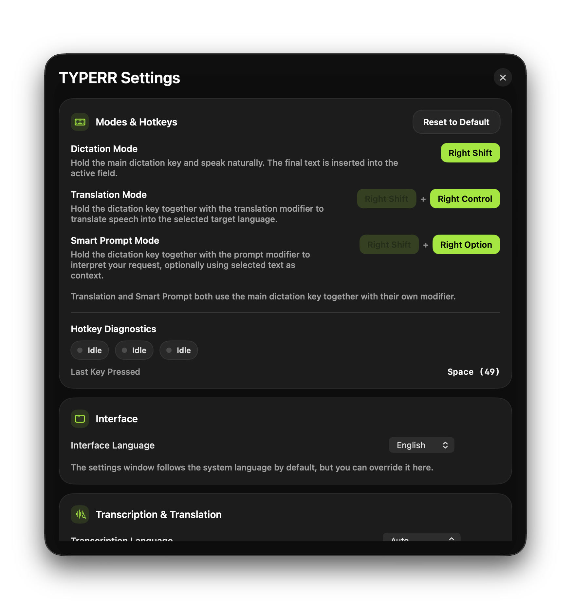

TYPERR
I designed and built a voice workflow layer for macOS — not another AI chat, but an invisible tool that turns speech into action without leaving your current app.
Three separate tools — dictation, translation, AI prompt generation — collapsed into one push-to-talk gesture. A menu bar utility that lives in the background, respects your workflow, and delivers results directly where you need them.

The app overall has no UI but it's Settings page does.

And working application status does. When you call it.
I Eliminated the Tool Switching Problem
Users with AI-heavy workflows cycle through an exhausting chain: dictate in one app, translate in another, prompt in a third, then paste into the actual workspace. Each context switch creates cognitive overhead, breaks flow, and increases error risk.
The real problem wasn't any single tool — it was the gaps between them, the copy-paste overhead, the context loss, and the mental cost of deciding which app to open first.
Too Many Micro-Tools per Thought
Before TYPERR, a single voice-driven task required 6 steps: formulate thought, get transcription, translate if needed, rewrite as prompt, paste into target app, manually fix the result.
Gap Between Voice and Deliverable
Most voice products stop at raw transcription. The real user task is never "get raw text" — it's insert a ready phrase, translate speech, generate an email reply, or create a prompt.
Distrust of the AI Layer
AI tools have a core UX problem: users don't understand when local logic fired vs cloud API, why the result looks this way, or what to do when something breaks.
My Mandate
Design and build a macOS utility that makes voice a natural layer over any application — not a destination you have to visit.
I Reframed Voice as a Workflow Layer
The initial task looked simple: let users speak instead of typing. But I reframed the product from "speech-to-text app" to "desktop voice workflow system" — shifting focus from raw ASR to orchestrating scenarios across the OS.
This reframing changed everything: from just transcription to scenario routing, from a standalone window to ambient background presence, from one output to three purpose-specific delivery surfaces.
Voice UX becomes truly valuable when it's embedded in the work flow and doesn't force the user to switch between multiple tools. One input gesture, one mental model, three outcomes depending on context and mode.
Instead of "open app for dictation, another for translation, third for prompts, fourth to paste the result" — TYPERR offers one gesture that turns voice from a separate feature into a universal work layer over macOS.
I Researched the Market and Found No Real Alternative
Before building, I audited every comparable macOS voice tool on the market. Every single competitor requires a paid subscription, comes with platform-specific limitations, and none offer the combined feature set TYPERR delivers.
This research confirmed the opportunity: there was no tool that unified dictation, translation, and AI prompt generation in a single ambient interface with local-first processing.
Transcription Only
Handles dictation well but stops at raw text — no translation, no AI processing, no prompt generation.
File-Based Workflow
Requires importing audio files rather than real-time push-to-talk capture. Designed for post-processing, not live workflow.
Closest Competitor
Offers real-time dictation with AI enhancement, but lacks translation mode and doesn't provide a dedicated prompt panel with regeneration and refinement.
Built-in but Limited
Free and system-level, but limited to basic dictation with no AI layer, no translation, no prompt generation, and no customization.
Polished but Subscription-Locked
Strong dictation with AI auto-editing and filler word removal. Multi-platform (Mac, Windows, iOS) with 100+ language support — but no dedicated prompt generation workflow or review panel.
No existing tool offers all three capabilities (dictation + translation + AI prompts) in one push-to-talk interface with local-first processing and no subscription model. The market gap was clear.
I Identified Three Core User Segments
The product targets users who live in AI-heavy workflows and lose significant time to tool switching. Each persona represents a distinct use case, but they all share one pain: too many micro-tools per thought.
Founders, Operators, Managers
People who frequently respond by voice, formulate ideas on the go, and work simultaneously across email, chats, docs, and browser. They value speed over interface perfection.
Designers, Creators, Prompt-Heavy Users
People who work extensively with Midjourney, ChatGPT, Claude, and similar systems — frequently crafting complex multi-step prompts and wanting to turn voice thoughts into quality text.
Multilingual Professionals
People who think in one language but write in another — frequently switching between Russian, English, and other languages. They want to eliminate the "dictate separately, translate separately, paste separately" flow.
Four UX Goals That Shaped Every Decision
Minimize Decision Overhead
Users shouldn't decide "do I need a translator? an AI tool? a dictation app?" — they learn one input pattern, and the system routes scenarios automatically.
Preserve Flow State
The product must never pull users into a separate main window. That's why the architecture is a menu bar app with minimal floating surfaces.
Make AI Quiet, Not Pushy
AI in the product is a background capability, not a main screen. The interface is near-invisible in idle, shows compact overlays during capture, and only opens a panel for high-value outputs.
Make Reliability Part of Perception
Users must understand what the system is doing: microphone access, API readiness, model loading status, listening vs processing state. Trust is built through transparency, not magic.
Three UX Principles I Built the Product Around
Local-First for Speed and Flow
The local ASR model isn't just for privacy — it ensures the baseline scenario is fast, predictable, network-independent, and suitable for real work tempo. Offline capability is a UX feature, not a technical constraint.
Cloud Only When the Task Needs It
The cloud layer activates only when local ASR isn't enough: for smart prompt processing, translation enrichment, and complex deliverable-oriented AI responses. Cloud is an enhancer, never a dependency.
Trust Is Part of the Interface
The product embeds mechanisms that improve not just accuracy but the feeling of reliability: fallback behavior, API diagnostics, model status, keyboard diagnostics, prompt history, and explicit onboarding.
I Mapped the End-to-End Flow
The user journey is deceptively simple on the surface — press a key, speak, get the result. But underneath, the system handles mode detection, audio capture, processing routing, and surface selection in milliseconds.
Press and Hold Hotkey
Global keyboard hook detects the key combination and determines the active mode: dictation, translation, or smart prompt.
Audio Capture Begins
Microphone activates, audio converts to Whisper-compatible format, and the current feedback surface shows the listening state.
User Speaks
VAD, segmentation, and real-time draft transcription run locally via on-device AI model on Apple Silicon.
Key Released — Processing Starts
Capture session closes, and the system routes to the appropriate pipeline based on mode: local-only for dictation, cloud-augmented for translation and prompts.
Result Delivered to the Right Surface
Dictation and translation inject text silently into the active app. Smart prompt results open in a dedicated review panel with regenerate, copy, and voice refinement options.
I Designed a Single Input Grammar for Three Outcomes
The strongest UX decision in TYPERR: one push-to-talk gesture with modifier keys that route to different modes. Hold the base key for dictation, add a translation modifier for translation, add a prompt modifier for AI smart prompt.
This eliminates decision overhead — users learn one muscle memory pattern, and the system handles routing internally. No menus, no mode selectors, no visible UI at all.
Hold Key → Dictation
Local ASR via on-device AI model — text inserts directly into the active field. No window switch, no clipboard dance.
Hold + Translation Mod → Translation
Speak in any language, get the result in the target language — inserted inline into the current app.
Hold + Prompt Mod → Smart Prompt
Voice task + optional selected text context → AI-generated result in a dedicated review panel. Supports regeneration and voice refinement.
This input grammar solves multiple problems at once: it lowers the learning curve, removes unnecessary UI, makes the product feel like muscle memory instead of a menu system, and allows future extension without changing the mental model.
I Architected a Local-First Pipeline with Cloud Augmentation
The core architecture separates local and cloud processing by intent — dictation uses a local AI model on-device for speed and offline reliability, while translation and smart prompt layer cloud LLM APIs only when the task demands it.
This isn't just a technical choice — it's a UX principle where the baseline must be fast, predictable, and network-independent. Cloud is an enhancer, never a dependency.

I Designed Four Purpose-Specific Surfaces
Not all results deserve the same delivery surface. I separated the interface into four distinct layers, each optimized for its specific output type and user attention level.
Dictation and translation inject text silently — low-friction, inline delivery. Smart prompt results open in a side panel because they're longer, more valuable, and may need editing or regeneration.
Menu Bar Presence
Always-on ambient status: idle icon, loading state, error indicator, active listening feedback.
Compact Overlays
Minimal floating windows during listening and processing — they give feedback without stealing focus from the user's work.
Prompt Result Panel
Dedicated review surface for high-value AI outputs with result type display, conversation history, regenerate, copy, and hold-to-refine.
Settings Control Center
Not a secondary screen but a real operational panel: hotkey assignment, language selection, API management, diagnostics, model status, and debug entry.

Eight UX Decisions That Shaped the Product
Every product is a stack of decisions. These are the eight choices that define TYPERR's interaction model and separate it from every other voice tool on the market.
Menu Bar Over Traditional App
This reduces the visual cost of the product to near-zero. It never competes with primary work windows for screen space.
Push-to-Talk Over Tap-to-Toggle
Faster, clearer, fewer state errors, and a better feeling of "on-demand" tooling. The gesture maps naturally to "hold to speak, release to send."
One Grammar for Three Modes
The strongest structural UX choice in the project. Complexity lives inside the system architecture, not on the interface surface.
Inline Output for Low-Friction Scenarios
Dictation and translation results inject directly into the active app — saving time and preserving flow state.
Dedicated Panel for High-Value Outputs
Smart Prompt results go to a review surface because they're longer, costlier to get wrong, and may need regeneration or voice refinement.
Selected Text as Silent Context
Users don't need to repeat context by voice — the system reads the current text selection and uses it as part of the AI task automatically.
Settings as Control Center
The settings window isn't a formality — it's an operational panel for managing quality, behavior, diagnostics, and API health.
Diagnostics as User Confidence
If a voice/AI product can't be diagnosed by the user, it quickly feels unreliable. In TYPERR, this is treated as a first-class UX principle.
I Evolved the Product Through Working Software
TYPERR wasn't designed in a vacuum — I built every version myself, testing interaction quality against real daily usage. Each iteration tightened the feedback loop between design intent and actual behavior.

Five-Phase UX Process
Phase 1: Product Framing
The initial task was "let users speak instead of typing." I reframed it into a desktop voice workflow system — shifting focus from ASR to scenario orchestration, reduced app switching, and state design.
Phase 2: Simplifying the Mental Model
Instead of scattered features, I chose one core gesture, multiple outcome modes, and different output surfaces. Complexity stays inside the architecture, not the interface.
Phase 3: Designing Feedback Surfaces
I designed how the system communicates with the user: compact overlays during listening, processing indicators during heavy work, settings as control panel, and prompt panel as review surface.
Phase 4: Building the Trust Loop
To prevent the product from feeling like "magic that sometimes breaks," I embedded API status checks, model loading indicators, hotkey diagnostics, explicit error messages, and onboarding guards.
Phase 5: Iterating Through Working Software
The product evolved through practical iterations: base dictation, then translation logic, then SuperPrompt improvements, then reliability fixes, then public version polish and custom app branding.
What I Shipped
TYPERR shipped as a working macOS utility with local ASR, cloud-augmented AI, and a desktop interaction model that doesn't exist in any competing product.
How I Measure UX Quality
For a voice + AI product, traditional conversion metrics don't capture the full picture. I defined six UX-specific metrics that map directly to the interaction model and trust system.
First Successful Result
How long from first launch to first successful dictation or prompt result — measures onboarding friction and setup completion quality.
Result Accepted Without Edit
How often the result is accepted without manual correction or regeneration — the core signal of output quality and trust.
Noise/Fragment Committed
How often the system commits a result where the user didn't intend to — measures the reliability of the capture session and VAD logic.
Regenerate + Refine Usage
How often users engage with the prompt panel's regenerate, copy, and hold-to-refine features — signals whether the review surface adds value.
Speak → Translated Text
Total time from voice input to translated text appearing in the active app — the key metric for multilingual workflow efficiency.
API Setup Without Drop-off
Percentage of users who complete the full API setup without abandoning — measures onboarding UX quality and smart default effectiveness.
What This Project Taught Me
The Best AI UX Is Invisible
TYPERR's power comes from what it doesn't show — no chat interface, no mode selector, no visible AI. The strongest UX decision was removing UI, not adding it.
Trust Requires Transparency, Not Magic
AI products that hide their internals feel unreliable after the first failure. Building diagnostics as a product feature is the difference between a tool people tolerate and one they depend on.
Designer + Engineer = Tighter Feedback Loops
By implementing the product myself, I could test interaction quality against real muscle memory within hours. The gap between design intent and shipped behavior collapsed to zero.
AI Is the Core Product — Not an Add-On
Unlike my earlier projects where AI was retrospective, TYPERR was designed AI-first from day one. Every architectural decision was shaped by AI capabilities and constraints.
Local Speech-to-Text
Task: Real-time transcription with VAD, segmentation, second-pass correction, and draft update path — all running locally on Apple Silicon.
Outcome: Sub-second feedback, offline capability, and privacy by default. The baseline experience works without any network connection.
Smart Prompt Processing
Task: Intent classification, output kind detection, quality tier routing, structured content parsing, and AI-powered text transformation.
Outcome: Voice input becomes a classified deliverable — an email reply, a prompt, a code snippet, an instruction — not just raw text.
Translation Pipeline
Task: Source language detection + target language translation, integrated into the same push-to-talk flow with inline result injection.
Outcome: Multilingual users speak in their native language and get translated text in the target app — one gesture, zero window switches.
Development Acceleration
Task: Architecture planning, native macOS implementation patterns, state machine design, API integration debugging.
Outcome: A solo designer-engineer shipped a production macOS utility with 6 core services, 4 interface surfaces, and a complete test suite.
Building an AI Product?
I design and build AI-native tools — from voice interfaces to desktop utilities to automated workflows. If you need someone who can think through the UX and ship the code, let's talk.
Get in Touch